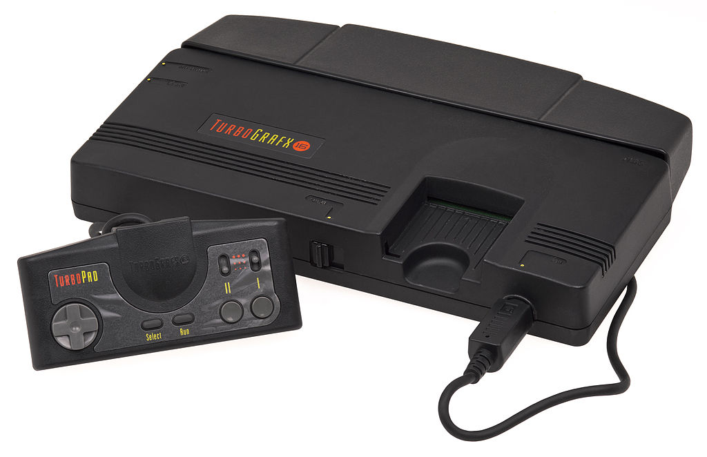
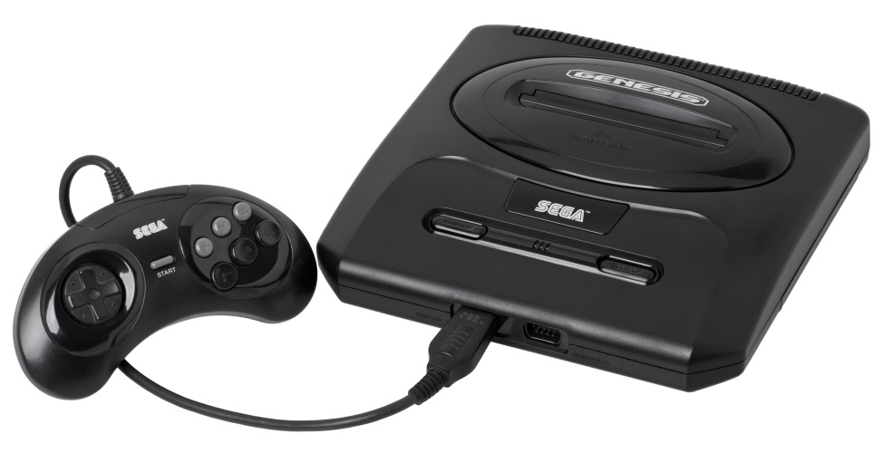
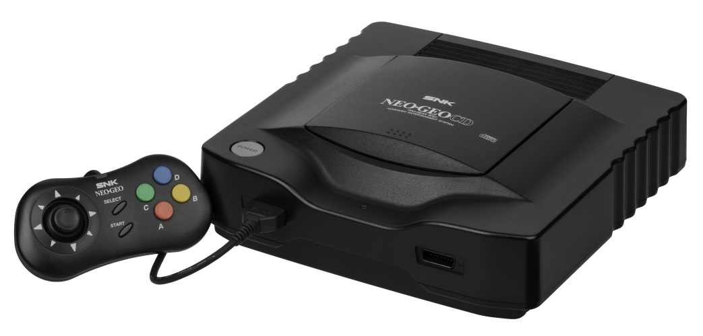
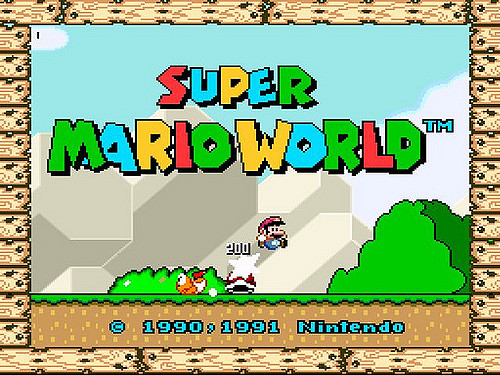
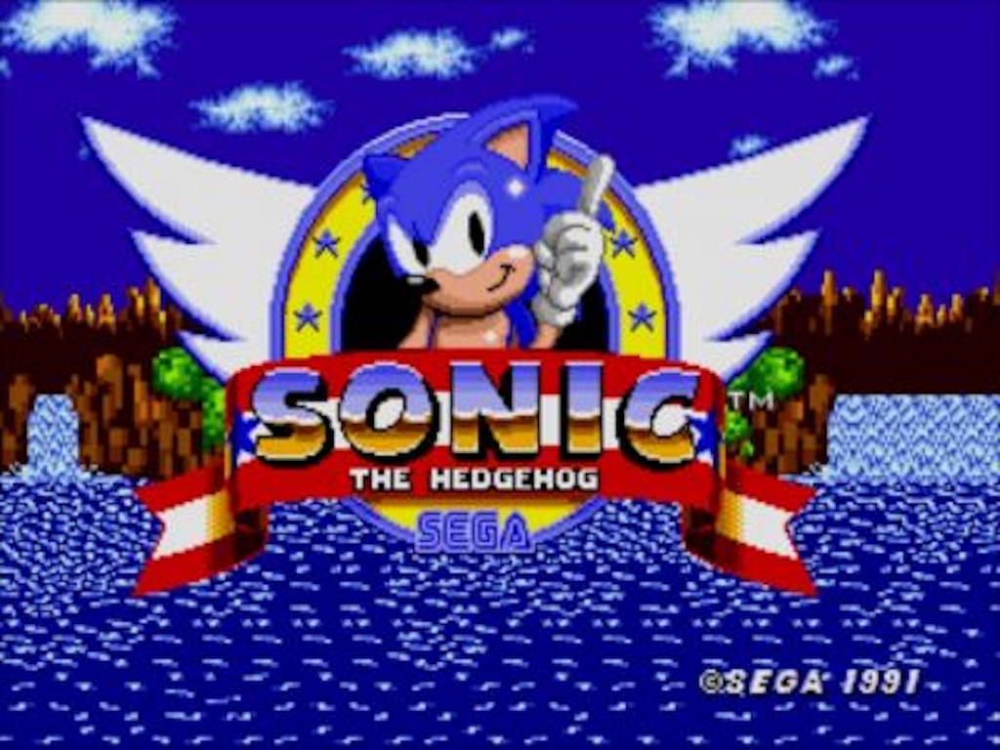
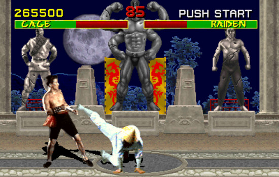
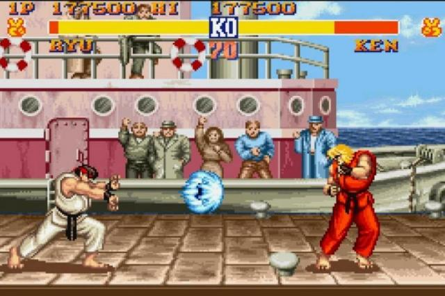

4° Geração
Renan Ribeiro
A quarta geração corresponde aos consoles lançados entre os anos de 1987 e 1996. Essa geração foi marcada com uma nova tecnologia que marcou a historia do mercado de games, que foram os consoles com os processadores de 16 bits, fazendo assim jogos com gráficos mais bonitos e um aperfeiçoamento nos jogos 3d.
PC Engine / TurbograFX-16

A revolução no mundo dos games começa em 1987, quando a NEC uma empresa japonesa que era conhecida na década de 80 pela a fabricação de computadores e outros componentes eletrônicos em parceria com a Hudson soft, fabricantes de jogos eletrônicos, criam o PC Engime (que depois foi lançado nos Estados Unidos com o nome de Turbograx – 16 no ano de 1989) o console que inaugurou a geração dos 16 bits. Embora a sua CPU era formada por apenas 8 bits a sua placa gráfica possuía 16 bits.
Outra coisa que marcou o PC Engine é que no inicio os seus jogos eram vendidos em cartão de memória conhecidos como HuCARDS (ou Turbochip nos EUA) diferentes dos consoles da terceira geração que utilizavam cartuchos.
E no ano de 1988 apenas há um ano depois de seu lançamento a NEC relança o PC Engine com o nome de PC Engime – Rom ( e em 1990 nos EUA com o nome de Turbografx CD) que tras uma nova tecnologia, a utilização de CD, tornando o PC Engine o primeiro console a utilizar a o CD como mídia.
Esse console foi lançado no Japão, EUA, Europa, mas não foi lançado no Brasil.
A SEGA Mega Drive

A Sega foi uma marca que não iniciou bem no mercado dos games o Master System lançado em 1886 não vendeu bem no Japão e não conseguiu superar a concorrência com a Nintendo.
Mas a Sega não parou por ai após o sucesso do PC Engine com o seu processador de 16 bits a Sega decide investir nessa nova tecnologia, e assim em 1988 chega ao mercado o Mega Drive o primeiro console a ter uma CPU de 16 bits.
O seu nome Mega Drive já diz exatamente o que seria esse console, ele possuía um processador de 6800 que era duas vezes mais rapido que um processador do SNES lançado há apenas dois anos depois.
Após o seu lançamento o Mega Drive se torna bem popular sendo um dos mais vendidos mas ainda nãos batendo o PC Engine que até então era conhecido como o console mais avançado no mercado. E o Mega Drive acabou com a fama de péssimos consoles da Sega.
No ano seguinte após o grande sucesso do Mega Drive no Japão agora era a vez dos norte americanos descobrirem a novidade, como Sega teve dificuldades com o nome Mega Drive nos Estados Unidos foi registrado com o nome de Genesis.
E aos poucos a Sega foi ganhando fama nos EUA conquistando cada vez mais o mercado americano e tirando o público do Turbografx – 16. A partir dai a Sega se tornou um dos consoles ais populares daquela geração.
O Mega Drive foi lançado no Japão em 1988, nos EUA em 1989, na Europa e no Brasil em 1990, e como nos outros países o sucesso do Mega Drive se repeti no Brasil.
Neo Geo

Com o sucesso das outras empresas japonesas como a Sega,Nintendo,e NEC no ramo dos consoles a também japonesa SNK em 1990 lança o Neo Geo um vídeo game que era aparentemente um forte concorrente no mercado de games já que vinha com uma tecnologia aparentemente superior aos outros consoles daquela geração já que tinha um processamento gráfico e qualidade geral de hardwere superior a de seus concorrentes já que o console possuía um processador de 16 bits e um co - processador de 8 bits.
O console ainda vinha com um memory card que permitia com que os jogadores guardassem seu records.
O problema do Neo Geo é que a SNK visou muito o lucro e o comércio e devido os altos preços o Neo Geo não vendeu muito porque afinal ara um vídeo game que todos desejavam mas ninguém poderia ter.
O Super Nintendo

Nintendo dominava que até então dominava dos mercado dos vídeo games com o Nintendo de 8 bits, mas com a chegada dos consoles de 16 bits e com o sucessode PC Engine e do Mega Drive da sua rival Sega a Nintendo foi perdendo cada vez mais seu público no Japão e no resto do mundo deixando de ser a principal marca principal no mundo dos vídeo – games. Então em 1990 a Nintendo volta co força no mercado e lança o Super Nintendo.
Logo quando chega ao mercado se torna extremamente popular já desbancando o PC Engime da NEC e batendo de frente com o Mega Drive da Sega, embora seu processamento não seja tão rápido quanto o do Mega Drive o Super Nintendo trás um gráfico muito avançado para a época tendo um chip que reproduzia as 256 cores ao mesmo tempo na e é o primeiro console a usar gráficos 3d além das inovações nos gráficos a Nintendo também taras inovações do joystick com os botões L (left) e R (right) padrão que foi seguido pelos consoles das gerações posteriores.
PRINCIPAIS JOGOS DA QUARTA GERAÇÃO
Super Mario World/Super Nintendo

Sonic The Headgehog/Mega Drive

Mortal Kombat/Mega Drive


Street Fighter 2/Super Nintendo
